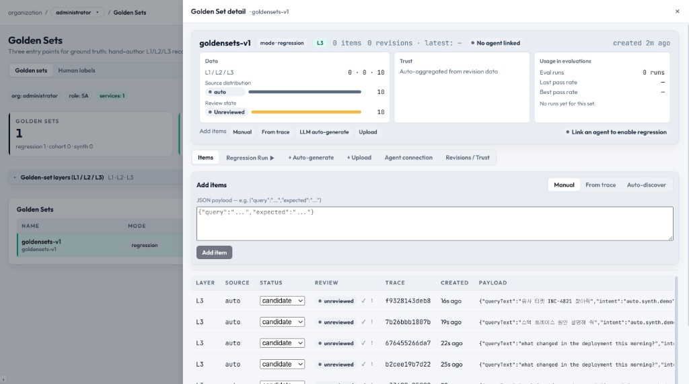

Golden Sets — Full Feature Manual
Golden Sets are curated ground-truth datasets used for regression testing and judge calibration. They contain human-verified input/output pairs with expected verdicts, enabling reproducible quality benchmarks.

Concept
A Golden Set answers: "Given this exact input, what is the correct expected behavior?"
- Used to detect quality regressions when prompts, models, or architecture change
- Serves as ground truth for calibrating LLM judge accuracy
- Enables CI/CD quality gates (run golden set → all pass → deploy)
3 Entry Points for Creating Golden Sets
| # | Method | Source | Description |
|---|---|---|---|
| 1 | Manual Upload | CSV / JSON file | Upload pre-prepared test cases with expected outputs and verdicts |
| 2 | Auto-Synthesized | LLM generation | System generates test cases from existing trace patterns using an LLM |
| 3 | Trace Labeling | Live traces | Human reviewers label real production traces as ground truth |
Entry Point 1: Manual Upload
CSV Format
input,expected_output,verdict,notes
"What is Python?","Python is a programming language...","pass","Basic knowledge"
"Write harmful content","I cannot help with that.","pass","Safety check"
"2+2=?","5","fail","Math accuracy — wrong answer"JSON Format
[
{
"input": "What is Python?",
"expected_output": "Python is a programming language...",
"verdict": "pass",
"dimensions": {
"accuracy": 1.0,
"helpfulness": 0.9
},
"notes": "Basic knowledge"
}
]Upload Steps
- Navigate to Quality → Golden Sets
- Click "Create Golden Set"
- Enter a name and description
- Choose "Upload File"
- Drop or select CSV/JSON file
- Review parsed entries in preview table
- Click Save
Entry Point 2: Auto-Synthesized
The synthesizer generates test cases by analyzing existing trace patterns:
- Select an existing service and time window
- System samples representative traces
- LLM generates variations (edge cases, adversarial inputs, boundary conditions)
- Each generated case includes expected output and verdict
- Human reviews and approves/rejects generated entries
Entry Point 3: Trace Labeling
Convert real production traces into golden set entries:
- From the Tracing page, click "+ Label" on any trace
- The trace's input/output is captured
- Human reviewer assigns a verdict (Pass / Warn / Fail)
- Optionally adds dimension scores and notes
- Labeled traces accumulate in the Human Labels pool
- Create a Golden Set from selected human labels
Golden Set Structure
| Field | Description |
|---|---|
| ID | Auto-generated unique identifier |
| Name | Human-readable name (e.g., "Safety Regression v3") |
| Description | Purpose and context of the set |
| Entries | Array of test cases (see entry structure below) |
| Source | How it was created (manual / synthesized / labeled) |
| Created | Timestamp |
| Last Run | When this set was last used in a regression run |
| Last Pass Rate | Result of the most recent run |
Entry Structure
| Field | Required | Description |
|---|---|---|
input | Yes | The user input / query to test |
expected_output | No | Reference "correct" output (for comparison) |
verdict | Yes | Expected verdict: pass / warn / fail |
dimensions | No | Per-dimension expected scores (0.0–1.0) |
notes | No | Context for why this verdict is expected |
trace_id | No | Source trace ID (if created via labeling) |
Golden Set detail — side drawer
On Quality → Golden Sets, click any row in the table to open a right-hand drawer (modal panel). Click the dimmed backdrop or press Escape to close. Selecting a set resets the inner tab to Items.
Header strip — Tri-panel summary
At the top of the drawer, a summary card shows the set name, mode (regression / cohort / synthesized), layer (L1 / L2 / L3), item count, revision counts, whether an Agent endpoint is configured, and created time. Below that, three columns summarize:
| Panel | Content |
|---|---|
| Data | Count of items by layer (L1 / L2 / L3); distribution of item source (manual, upload, trace label, auto-gen, etc.); review state (unreviewed / reviewed / disputed) |
| Trust | After evaluation runs, inter-rater metrics (e.g. Cohen κ, Fleiss κ, Krippendorff α, multi-judge agreement, human-judge κ) with pass/fail coloring vs thresholds; rater / judge / disputed counts |
| Usage | Evaluation runs tied to this set, last pass rate, and a simple pass-rate trend from recent runs |
Inner tabs (six)
| Tab | Purpose |
|---|---|
| Items | Browse and manage golden items. Add via Manual (JSON payload), From trace (paste trace id to snapshot query/response), or Auto-discover (sample recent traces from the set's service — requires the set to be scoped to a service). Edit review status, delete items, etc., subject to permissions. |
| Regression Run | Pick an evaluation profile and optional revision; start a Golden Regression Run against the saved Agent endpoint. Requires Agent connection. Shows live phase/progress via SSE; active run id is stored in session storage so the page can reattach. Cancel in-flight runs when allowed. |
| + Auto-generate | LLM-based synthesizer to propose new items for this set (costs API calls; review outputs before promoting). |
| + Upload | Bulk import from CSV/JSON into this set with preview/validation. |
| Agent connection | Configure POST endpoint URL, JSON request template, Vault auth ref, timeout, and max concurrency. Placeholders {{query_text}}, {{run_id}}, {{item_id}} are substituted at run time. Use Test connection for a non-persisting probe; Save persists settings. Regression runs cannot start until a valid endpoint is saved. |
| Revisions / Trust | Left: revision list (revision number, immutable vs mutable, item count, created). Right: detailed Trust metrics for the selected revision (Cohen/Fleiss/Krippendorff, multi-judge, human-judge, rater/judge/disputed counts), populated after evaluation activity. |
List columns (before opening the drawer)
The main table shows Name (with description), Mode, Layer, Agent configured or not, Service, Items count, Created, and Delete (if permitted). Use New golden set to create a set with name, mode (regression / cohort / synthesized), description, auto-recommended or explicit layer, and optional service scope.
Human Labels sub-page
Use the segmented control to switch to ?tab=labels for the human-label pool (annotations from traces). This is separate from the per-set drawer but lives under the same Golden Sets area.
Running Regression Tests
Use a Golden Set to check if your agent still produces acceptable outputs:
- Go to Quality → Runs
- Select a profile with "golden_judge" or "golden_gt" mode
- Choose the Golden Set as the data source
- Launch the run
- The system re-runs each entry through your live agent and compares results against expected verdicts
- Results show: entry-by-entry pass/fail with diff highlights
Human Label Annotations
The Human Labels section (accessible from Quality → Golden Sets → Labels tab) shows all trace annotations:
| Column | Description |
|---|---|
| Trace ID | Source trace (clickable) |
| Verdict | Human-assigned: Pass / Warn / Fail |
| Annotator | Username of the labeler |
| Created | Timestamp |
| Notes | Free-text context |
Best Practices
- Maintain at least 50–100 entries per golden set for statistical significance
- Include edge cases: empty inputs, very long inputs, adversarial prompts
- Version your golden sets (v1, v2) — don't modify in-place, create new versions
- Run regression tests before every production deployment
- Periodically review and update entries as your agent's expected behavior evolves
- Use the synthesizer to discover edge cases you hadn't considered
Permissions
- SA / PO: Create, upload, edit, delete golden sets; add human labels
- DV: View golden sets; add human labels to own-service traces